Ageing hypothalamic astrocytes
Evgenii Tretiakov
Last updated: 2022-11-24
Checks: 6 1
Knit directory: 1_heteroAstrocytes/
This reproducible R Markdown analysis was created with workflowr (version 1.7.0). The Checks tab describes the reproducibility checks that were applied when the results were created. The Past versions tab lists the development history.
The R Markdown is untracked by Git. To know which version of the R
Markdown file created these results, you’ll want to first commit it to
the Git repo. If you’re still working on the analysis, you can ignore
this warning. When you’re finished, you can run
wflow_publish to commit the R Markdown file and build the
HTML.
Great job! The global environment was empty. Objects defined in the global environment can affect the analysis in your R Markdown file in unknown ways. For reproduciblity it’s best to always run the code in an empty environment.
The command set.seed(20220624) was run prior to running
the code in the R Markdown file. Setting a seed ensures that any results
that rely on randomness, e.g. subsampling or permutations, are
reproducible.
Great job! Recording the operating system, R version, and package versions is critical for reproducibility.
Nice! There were no cached chunks for this analysis, so you can be confident that you successfully produced the results during this run.
Great job! Using relative paths to the files within your workflowr project makes it easier to run your code on other machines.
Great! You are using Git for version control. Tracking code development and connecting the code version to the results is critical for reproducibility.
The results in this page were generated with repository version 1cfad7d. See the Past versions tab to see a history of the changes made to the R Markdown and HTML files.
Note that you need to be careful to ensure that all relevant files for
the analysis have been committed to Git prior to generating the results
(you can use wflow_publish or
wflow_git_commit). workflowr only checks the R Markdown
file, but you know if there are other scripts or data files that it
depends on. Below is the status of the Git repository when the results
were generated:
Ignored files:
Ignored: .Rhistory
Ignored: .Rproj.user/
Ignored: analysis/.Rhistory
Ignored: analysis/figure/
Ignored: data/comb_astrocytes.bak.h5Seurat
Ignored: data/comb_astrocytes.bak.h5ad
Ignored: data/deng2019_arc_chow.h5Seurat
Ignored: data/deng2019_arc_chow.h5ad
Ignored: data/deng2019_arc_chow_astrocytes.h5Seurat
Ignored: data/deng2019_arc_chow_astrocytes.h5ad
Ignored: data/deng2019_arc_chow_astrocytes_fin.h5Seurat
Ignored: data/deng2019_arc_chow_astrocytes_fin.h5ad
Ignored: data/deng2019_arc_chow_clusters.h5Seurat
Ignored: data/deng2019_arc_chow_clusters.h5ad
Ignored: data/deng2019_arc_hfd.h5Seurat
Ignored: data/deng2019_arc_hfd.h5ad
Ignored: data/deng2019_arc_hfd_astrocytes.h5Seurat
Ignored: data/deng2019_arc_hfd_astrocytes.h5ad
Ignored: data/deng2019_arc_hfd_astrocytes_fin.h5Seurat
Ignored: data/deng2019_arc_hfd_astrocytes_fin.h5ad
Ignored: data/deng2019_arc_hfd_clusters.h5Seurat
Ignored: data/deng2019_arc_hfd_clusters.h5ad
Ignored: data/deng2019_arc_refi_astrocytes.h5Seurat
Ignored: data/deng2019_arc_refi_astrocytes.h5ad
Ignored: data/deng_2020_arc_chow.h5Seurat
Ignored: data/deng_2020_arc_chow.h5ad
Ignored: data/deng_2020_arc_chow_astro-npy-pomc.h5Seurat
Ignored: data/deng_2020_arc_chow_astro-npy-pomc.h5ad
Ignored: data/deng_2020_arc_chow_astrocytes.h5Seurat
Ignored: data/deng_2020_arc_chow_astrocytes.h5ad
Ignored: data/deng_2020_arc_chow_astrocytes_fin.h5Seurat
Ignored: data/deng_2020_arc_chow_astrocytes_fin.h5ad
Ignored: data/deng_2020_arc_chow_clusters.h5Seurat
Ignored: data/deng_2020_arc_chow_clusters.h5ad
Ignored: data/deng_2020_arc_hfd.h5Seurat
Ignored: data/deng_2020_arc_hfd.h5ad
Ignored: data/deng_2020_arc_hfd_astrocytes.h5Seurat
Ignored: data/deng_2020_arc_hfd_astrocytes.h5ad
Ignored: data/deng_2020_arc_hfd_astrocytes_fin.h5Seurat
Ignored: data/deng_2020_arc_hfd_astrocytes_fin.h5ad
Ignored: data/deng_2020_arc_hfd_clusters.h5Seurat
Ignored: data/deng_2020_arc_hfd_clusters.h5ad
Ignored: data/deng_2020_arc_refi_astrocytes.h5Seurat
Ignored: data/deng_2020_arc_refi_astrocytes.h5ad
Ignored: output/figures/
Untracked files:
Untracked: analysis/.ipynb_checkpoints/
Untracked: analysis/2022-11-16_pr.Rmd
Untracked: analysis/2022-11-16_pr2.Rmd
Untracked: analysis/2022-11-23_pr.Rmd
Untracked: analysis/deng2020_norm_ligrec.pickle
Untracked: analysis/normalised.ipynb
Untracked: output/tables/ageing_astr_k9-mrk_logreg-sct.csv
Untracked: output/tables/ageing_astr_k9-mrk_roc-sct.csv
Untracked: output/tables/astr_k17-mrk_wilcox-sct.csv
Untracked: output/tables/astr_reg-mrk_logreg-sct-notintegrated.csv
Untracked: output/tables/astr_reg-mrk_roc-sct-notintegrated.csv
Untracked: output/tables/genes-meta_astroMap-all.tsv
Untracked: output/tables/genes_astroMap-all.tsv
Unstaged changes:
Modified: analysis/hfd.Rmd
Modified: code/genes.R
Modified: output/tables/arc_ast.csv
Note that any generated files, e.g. HTML, png, CSS, etc., are not included in this status report because it is ok for generated content to have uncommitted changes.
There are no past versions. Publish this analysis with
wflow_publish() to start tracking its development.
genes.embed <- c("Ndrg2", "Slc1a3", "Gfap",
"S100b", "Agt", "Slc6a11",
"Aqp4", "Nfia", "Aldoc",
"Apoe", "Aldh1l1", "Sox9",
"Fgfr3", "Egfr", "Ntrk2")
srt <- readRDS(here(raw_dir, "GSE188646_hypo.integrated.final.20210719.RDS"))skim(srt@meta.data)── Data Summary ────────────────────────
Values
Name srt@meta.data
Number of rows 40064
Number of columns 8
_______________________
Column type frequency:
character 2
factor 3
numeric 3
________________________
Group variables None
── Variable type: character ────────────────────────────────────────────────────
skim_variable n_missing complete_rate min max empty n_unique whitespace
1 orig.ident 0 1 6 7 0 8 0
2 stim 0 1 4 5 0 2 0
── Variable type: factor ───────────────────────────────────────────────────────
skim_variable n_missing complete_rate ordered n_unique
1 integrated_snn_res.1.5 0 1 FALSE 59
2 seurat_clusters 0 1 FALSE 59
3 group 0 1 FALSE 9
top_counts
1 0: 2418, 1: 2213, 2: 1911, 3: 1812
2 0: 2418, 1: 2213, 2: 1911, 3: 1812
3 Neu: 26940, Oli: 5027, Ast: 4494, Mic: 1218
── Variable type: numeric ──────────────────────────────────────────────────────
skim_variable n_missing complete_rate mean sd p0 p25 p50
1 nCount_RNA 0 1 5379. 5811. 498 1646 3479
2 nFeature_RNA 0 1 2258. 1510. 207 1055 1954.
3 percent.mt 0 1 1.61 1.91 0 0.202 0.900
p75 p100 hist
1 5935. 55149 ▇▁▁▁▁
2 2852 7495 ▇▇▂▂▁
3 2.30 9.99 ▇▂▁▁▁srtAn object of class Seurat
27135 features across 40064 samples within 2 assays
Active assay: integrated (2000 features, 2000 variable features)
1 other assay present: RNA
2 dimensional reductions calculated: pca, umapDimPlot(srt, reduction = "umap",
group.by = "orig.ident",
label = TRUE, repel = TRUE) + NoLegend()
plEmbOrig <- DimPlot(srt, reduction = "umap",
group.by = "group",
label = TRUE, repel = TRUE) + NoLegend()
plEmbOrig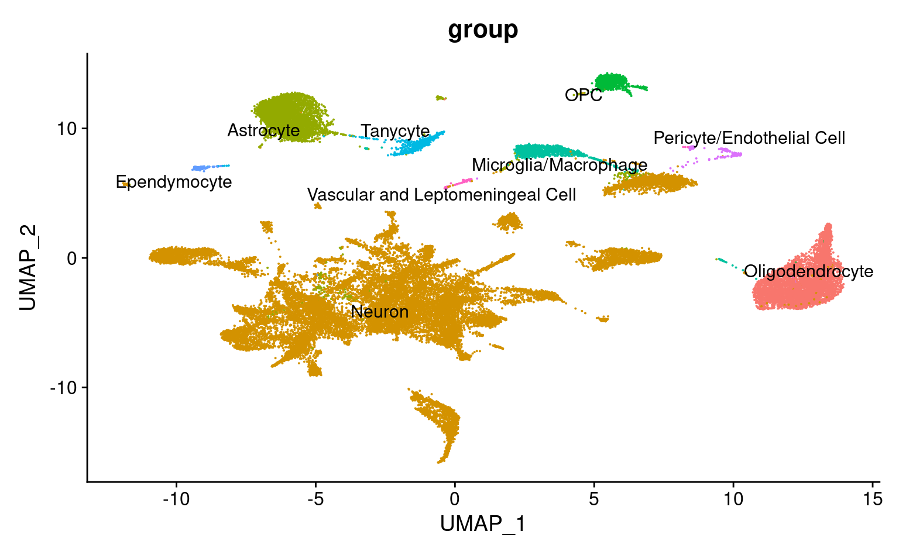
if (!file.exists(here(raw_dir, "GSE188646.h5Seurat"))) {
SaveH5Seurat(srt,
filename = here(raw_dir, "GSE188646.h5Seurat"))
Convert(here(raw_dir, "GSE188646.h5Seurat"),
dest = "h5ad")
}
Idents(srt) <- "group"
astro <-
srt |>
subset(idents = c("Astrocyte"))
if (!file.exists(here(raw_dir, "astro.h5Seurat"))) {
SaveH5Seurat(astro,
filename = here(raw_dir, "astro.h5Seurat"))
Convert(here(raw_dir, "astro.h5Seurat"),
dest = "h5ad")
}
gc() used (Mb) gc trigger (Mb) max used (Mb)
Ncells 8175944 436.7 14670914 783.6 14670914 783.6
Vcells 510276597 3893.2 666118601 5082.1 523684594 3995.4DefaultAssay(object = astro) <- "RNA"
astro <-
SCTransform(astro, vst.flavor = "v2",
# vars.to.regress = "percent_mt",
method = "glmGamPoi",
variable.features.n = 5000,
return.only.var.genes = FALSE,
seed.use = reseed,
verbose = FALSE) |>
RunPCA(seed.use = reseed,
verbose = FALSE) |>
RunUMAP(reduction = "pca",
densmap = TRUE, dims = 1:50,
seed.use = reseed, verbose = FALSE)
plEmbRawBatch <- DimPlot(astro, reduction = "umap",
group.by = "orig.ident",
label = TRUE, repel = TRUE) + NoLegend()
plEmbRawReg <- DimPlot(astro, reduction = "umap",
group.by = "stim",
label = TRUE, repel = TRUE) + NoLegend()
plEmbRawBatch + plEmbRawReg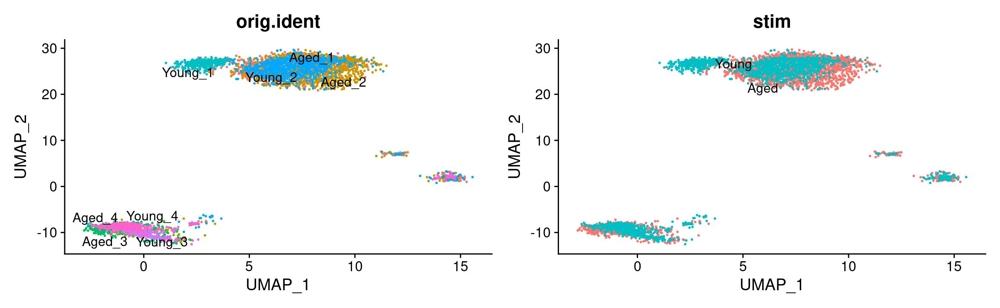
Integration of astrocytes
srt_list <- Seurat::SplitObject(astro, split.by = "orig.ident")
srt_list <- lapply(X = srt_list,
vst.flavor = "v2",
FUN = SCTransform,
# vars.to.regress = "percent_mt",
method = "glmGamPoi",
variable.features.n = 5000,
return.only.var.genes = FALSE,
seed.use = reseed,
verbose = FALSE)
features <- SelectIntegrationFeatures(object.list = srt_list, nfeatures = 3000, verbose = FALSE)npcs <- 30
srt_list <- lapply(X = srt_list, FUN = RunPCA, features = features, npcs = npcs, seed.use = reseed, verbose = FALSE)
srt_list <- PrepSCTIntegration(object.list = srt_list, anchor.features = features)
anchors <- FindIntegrationAnchors(
object.list = srt_list,
normalization.method = "SCT",
anchor.features = features,
reduction = "rpca",
dims = 1:30,
k.anchor = 20,
verbose = FALSE
)
combined_sct <- IntegrateData(
anchorset = anchors,
normalization.method = "SCT",
dims = 1:30,
verbose = FALSE
)
metadata = combined_sct@meta.data
rownames(metadata) = colnames(combined_sct)
ref.labels = metadata$stim
combined_sct <-
RunPCA(combined_sct, npcs = npcs,
seed.use = reseed, verbose = FALSE)
combined_sctAn object of class Seurat
44112 features across 4494 samples within 3 assays
Active assay: integrated (3000 features, 3000 variable features)
2 other assays present: RNA, SCT
1 dimensional reduction calculated: pcacombined_sct <- combined_sct |>
RunUMAP(reduction = "pca", return.model = TRUE,
densmap = TRUE, dims = 1:npcs,
seed.use = reseed, verbose = FALSE) |>
FindNeighbors(reduction = "pca", dims = 1:npcs, verbose = FALSE)
resolutions <-
modularity_event_sampling(
A = combined_sct@graphs$integrated_snn,
n.res = 10,
gamma.min = 0.1,
gamma.max = 2.5
) # sample based on the similarity matrix
# clustering using Suerat
combined_sct <- combined_sct |>
FindClusters(algorithm = 4, method = "igraph",
resolution = resolutions, random.seed = reseed,
verbose = FALSE)
# initial cluster tree from Seurat flat clustering
plot_clustree(
labelmat = combined_sct@meta.data,
prefix = 'integrated_snn_res.',
ref.labels = ref.labels,
plot.ref = FALSE
)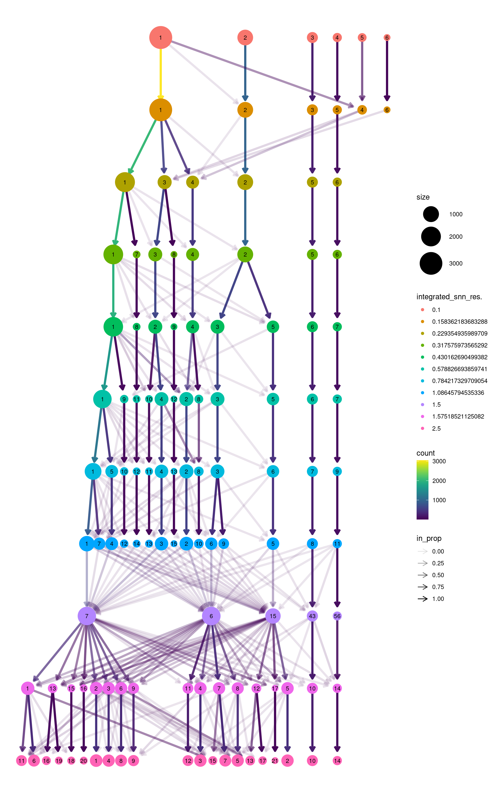
# Adjusted Multiresolution Rand Index (AMRI)
ks.flat <- apply(
out$labelmat.flat,
2,
FUN = function(x)
length(unique(x))
)
ks.mrtree <- apply(
out$labelmat.mrtree,
2,
FUN = function(x)
length(unique(x))
)
amri.flat <- sapply(1:ncol(out$labelmat.flat), function(i)
AMRI(out$labelmat.flat[, i], ref.labels)$amri)
amri.flat <- aggregate(amri.flat, by = list(k = ks.flat), FUN = mean)
amri.recon <- sapply(1:ncol(out$labelmat.mrtree), function(i)
AMRI(out$labelmat.mrtree[, i], ref.labels)$amri)
df <- rbind(
data.frame(
k = amri.flat$k,
amri = amri.flat$x,
method = 'Seurat flat'
),
data.frame(k = ks.mrtree, amri = amri.recon, method = 'MRtree')
)
ggplot2::ggplot(data = df, aes(x = k, y = amri, color = method)) + geom_line() + theme_bw()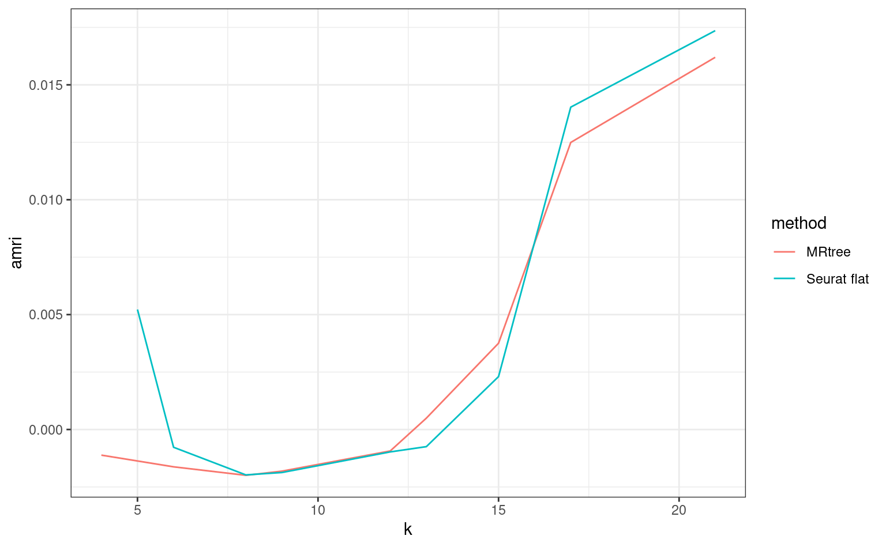
stab.out <- stability_plot(out)
stab.out$plot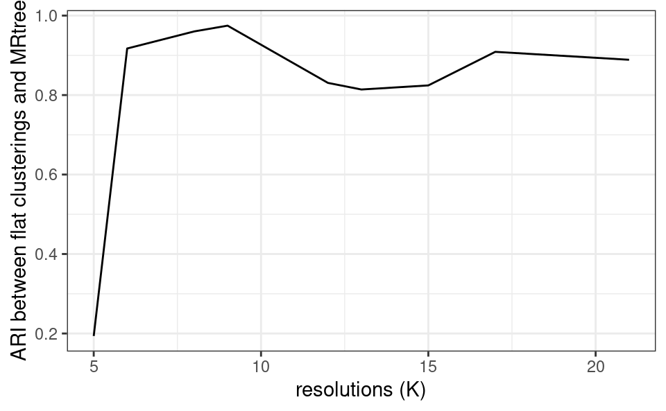
Plot by source
plEmbCombBatch <- DimPlot(combined_sct, reduction = "umap",
group.by = "orig.ident",
label = TRUE, repel = TRUE) + NoLegend()
plEmbCombReg <- DimPlot(combined_sct, reduction = "umap",
group.by = "stim",
label = TRUE, repel = TRUE) + NoLegend()
plEmbCombBatch + plEmbCombReg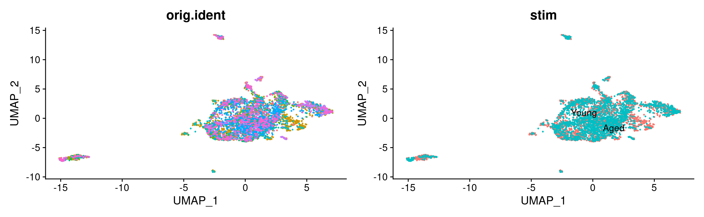
stab.out$df resolution ari
1 5 0.1936614
2 6 0.9171808
3 8 0.9601062
4 9 0.9746733
5 12 0.8306028
6 13 0.8139924
7 15 0.8242993
8 17 0.9087655
9 21 0.8887843combined_sct$k_tree <- as.factor(out$labelmat.mrtree[, "K17"])
p1 <- DimPlot(combined_sct, label = T, repel = T) + ggtitle("Unsupervised clustering") + NoLegend()
p2 <- DimPlot(combined_sct, label = T, repel = T, group.by = "k_tree") + ggtitle("MRTree") + NoLegend()
p1 | p2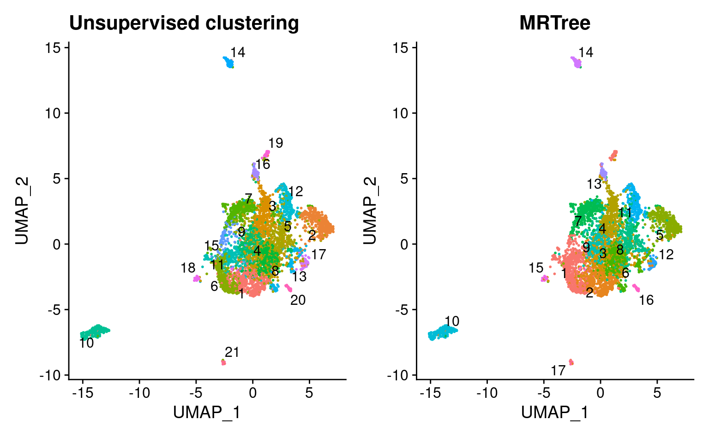
library(schex)
combined_sct <- make_hexbin(combined_sct, nbins = 60, dimension_reduction = "UMAP")
plot_hexbin_density(combined_sct)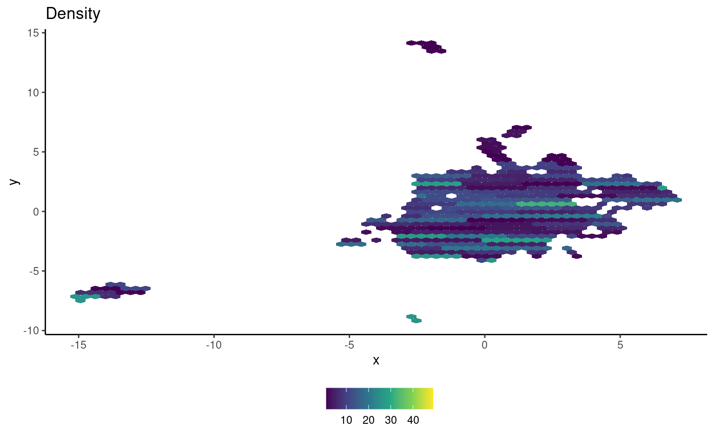
plot_hexbin_meta(combined_sct, col = "nCount_RNA", action = "median")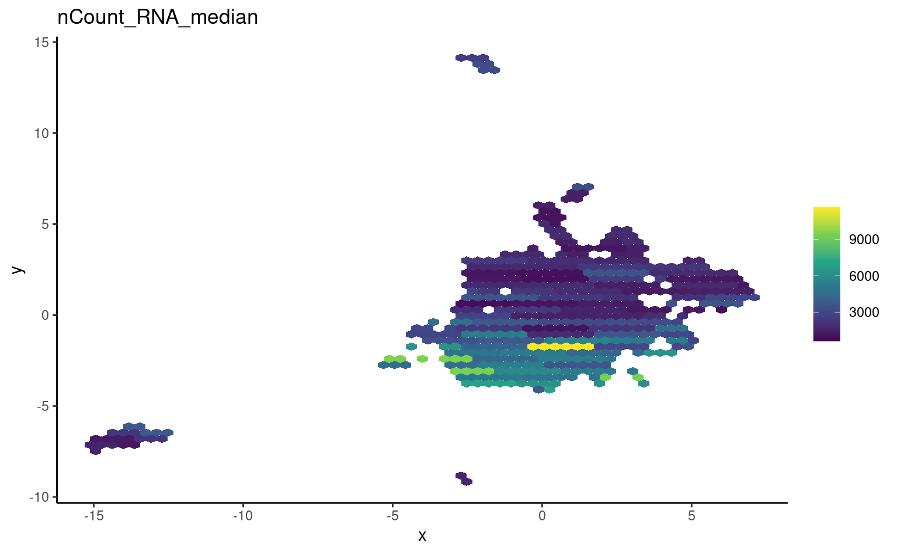
plot_hexbin_meta(combined_sct, col = "k_tree", action = "majority")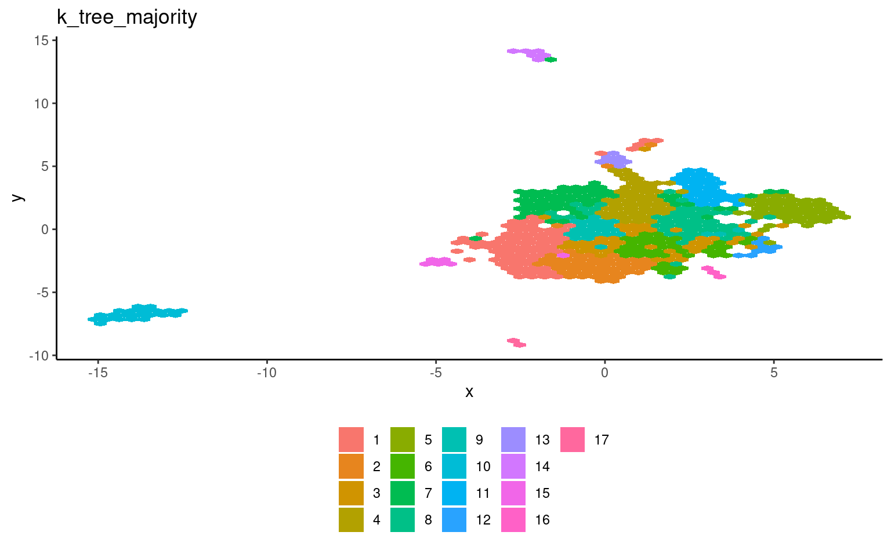
label_df <- make_hexbin_label(combined_sct, col = "k_tree")
pp <- plot_hexbin_meta(combined_sct, col = "k_tree", action = "majority")
pp + ggrepel::geom_label_repel(data = label_df, aes(x = x, y = y, label = label), colour = "black",
label.size = NA, fill = NA)reg_df <- make_hexbin_label(combined_sct,
col = "orig.ident")
pp2 <- plot_hexbin_meta(combined_sct,
col = "orig.ident",
action = "majority")
pp2 + ggrepel::geom_label_repel(data = reg_df,
aes(x = x, y = y,
label = label),
colour = "black",
label.size = NA, fill = NA)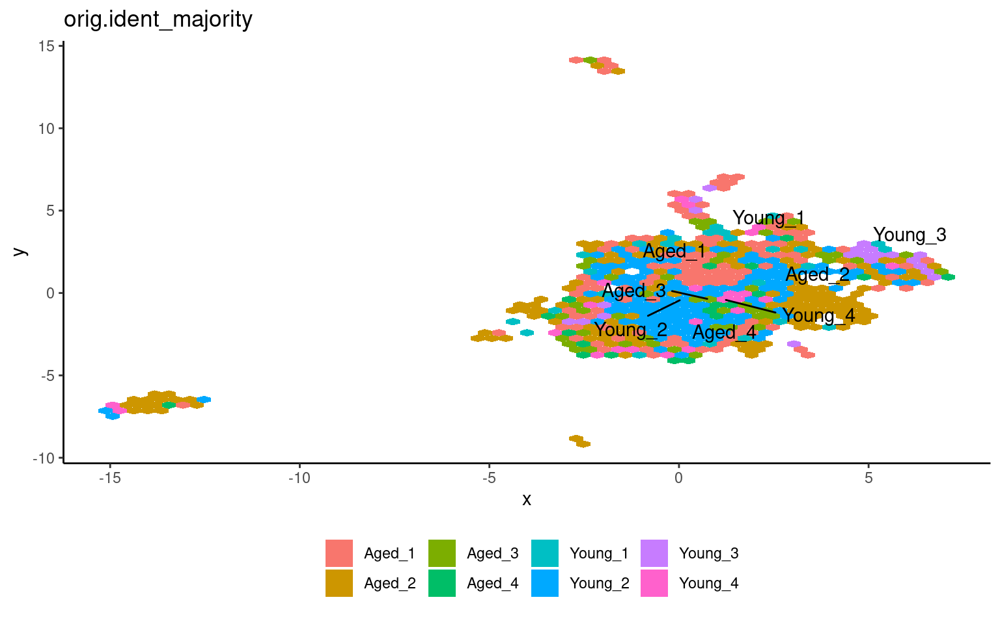
Idents(combined_sct) <- "k_tree"
combined_sct <- PrepSCTFindMarkers(combined_sct)
srt.markers.roc <- FindAllMarkers(combined_sct, only.pos = TRUE, min.pct = 0.25, logfc.threshold = 0.25, test.use = "roc")
readr::write_csv(srt.markers.roc,
here(tables_dir,
'ageing_astr_k9-mrk_roc-sct.csv'))
srt.markers.roc %>%
group_by(cluster) %>%
slice_max(n = 3, order_by = avg_log2FC)# A tibble: 40 × 8
# Groups: cluster [15]
myAUC avg_diff power avg_log2FC pct.1 pct.2 cluster gene
<dbl> <dbl> <dbl> <dbl> <dbl> <dbl> <fct> <chr>
1 0.804 1.51 0.608 2.18 0.798 0.263 1 Aldh1a1
2 0.74 0.880 0.48 1.27 0.739 0.346 1 Gm44151
3 0.712 0.785 0.424 1.13 0.645 0.252 1 Egfl6
4 0.711 1.51 0.422 2.18 0.625 0.183 4 Sfta3-ps
5 0.742 1.36 0.484 1.96 0.701 0.213 4 Pdzph1
6 0.711 1.25 0.422 1.80 0.705 0.278 4 Slit2
7 0.823 1.81 0.646 2.61 0.851 0.377 5 Rpl26
8 0.808 1.79 0.616 2.59 0.858 0.401 5 Fth1
9 0.822 1.66 0.644 2.39 0.861 0.317 5 Rpl23a
10 0.802 0.902 0.604 1.30 0.79 0.327 6 1700034P13Rik
# … with 30 more rowssrt.markers.lr <- FindAllMarkers(combined_sct, only.pos = TRUE, min.pct = 0.25, logfc.threshold = 0.25, test.use = "LR")
readr::write_csv(srt.markers.lr,
here(tables_dir,
'ageing_astr_k9-mrk_logreg-sct.csv'))
srt.markers.lr %>%
group_by(cluster) %>%
slice_max(n = 3, order_by = avg_log2FC)# A tibble: 51 × 7
# Groups: cluster [17]
p_val avg_log2FC pct.1 pct.2 p_val_adj cluster gene
<dbl> <dbl> <dbl> <dbl> <dbl> <fct> <chr>
1 6.20e-137 2.18 0.798 0.263 1.86e-133 1 Aldh1a1
2 1.78e- 57 1.76 0.604 0.222 5.35e- 54 1 Tafa1
3 3.89e- 29 1.35 0.581 0.305 1.17e- 25 1 Esrrg
4 5.31e- 10 1.47 0.374 0.261 1.59e- 6 2 Pacrg
5 4.36e- 9 1.42 0.34 0.231 1.31e- 5 2 Gm36037
6 4.92e- 9 1.25 0.435 0.305 1.48e- 5 2 Otx2os1
7 2.28e- 6 1.42 0.369 0.336 6.83e- 3 3 Frmpd1
8 3.12e- 3 1.20 0.239 0.259 1 e+ 0 3 D130040H23Rik
9 5.16e- 4 1.19 0.273 0.273 1 e+ 0 3 Kansl3
10 6.79e- 66 2.18 0.625 0.183 2.04e- 62 4 Sfta3-ps
# … with 41 more rowssrt.markers.lr %>%
group_by(cluster) %>%
top_n(n = 10, wt = avg_log2FC) -> top10
DoHeatmap(combined_sct, features = top10$gene,
size = 4, angle = 90) + NoLegend()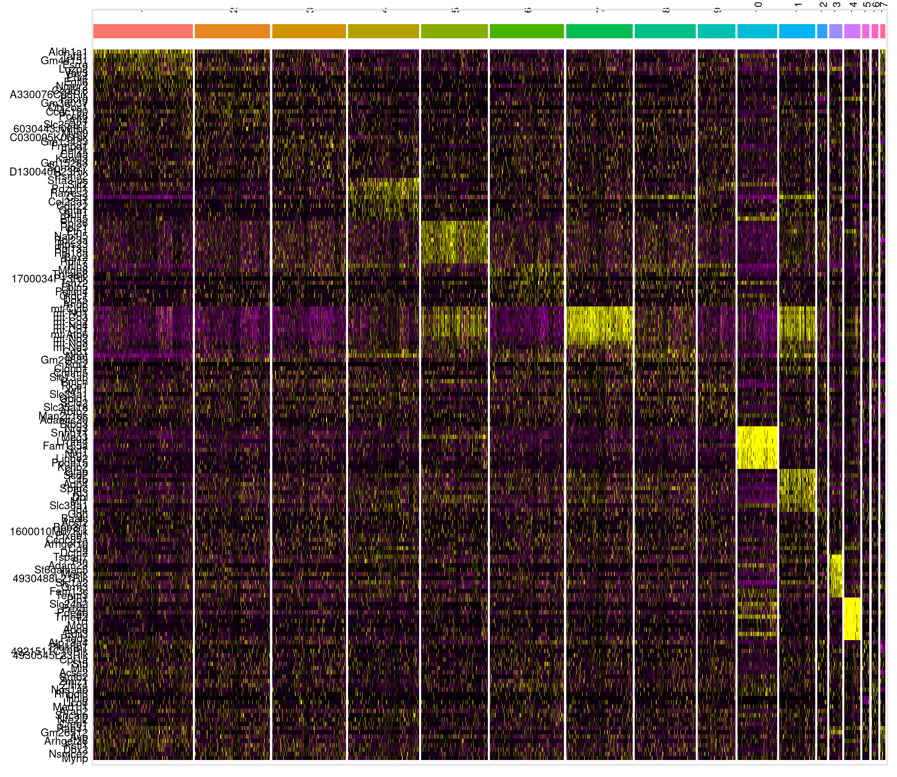
library(Scillus)
plot_heatmap(
dataset = combined_sct,
markers = srt.markers.lr,
sort_var = c("k_tree", "orig.ident"),
anno_var = c(
"k_tree",
"orig.ident",
"stim",
"percent.mt",
"nFeature_RNA",
"nCount_RNA"
),
anno_colors = list(
"Set2",
# RColorBrewer palette
c("navy", "red", "orange", "gold", "darkorchid3", "dodgerblue", "forestgreen", "orchid"),
# color vector
c("navy", "gold"),
"Greens",
c("blue", "white", "red"),
# Three-color gradient
"Reds"
)
)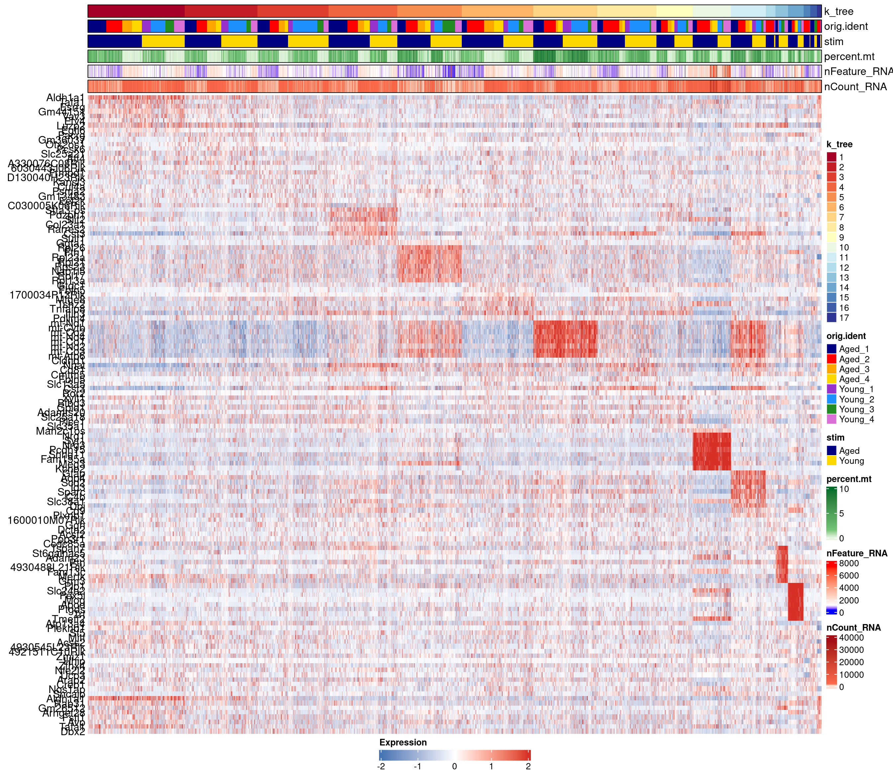
plot_heatmap(
dataset = combined_sct,
markers = srt.markers.roc,
sort_var = c("k_tree", "orig.ident"),
anno_var = c(
"k_tree",
"orig.ident",
"stim",
"percent.mt",
"nFeature_RNA",
"nCount_RNA"
),
anno_colors = list(
"Set2",
# RColorBrewer palette
c("navy", "red", "orange", "gold", "darkorchid3", "dodgerblue", "forestgreen", "orchid"),
# color vector
c("navy", "gold"),
"Greens",
c("blue", "white", "red"),
# Three-color gradient
"Reds"
)
)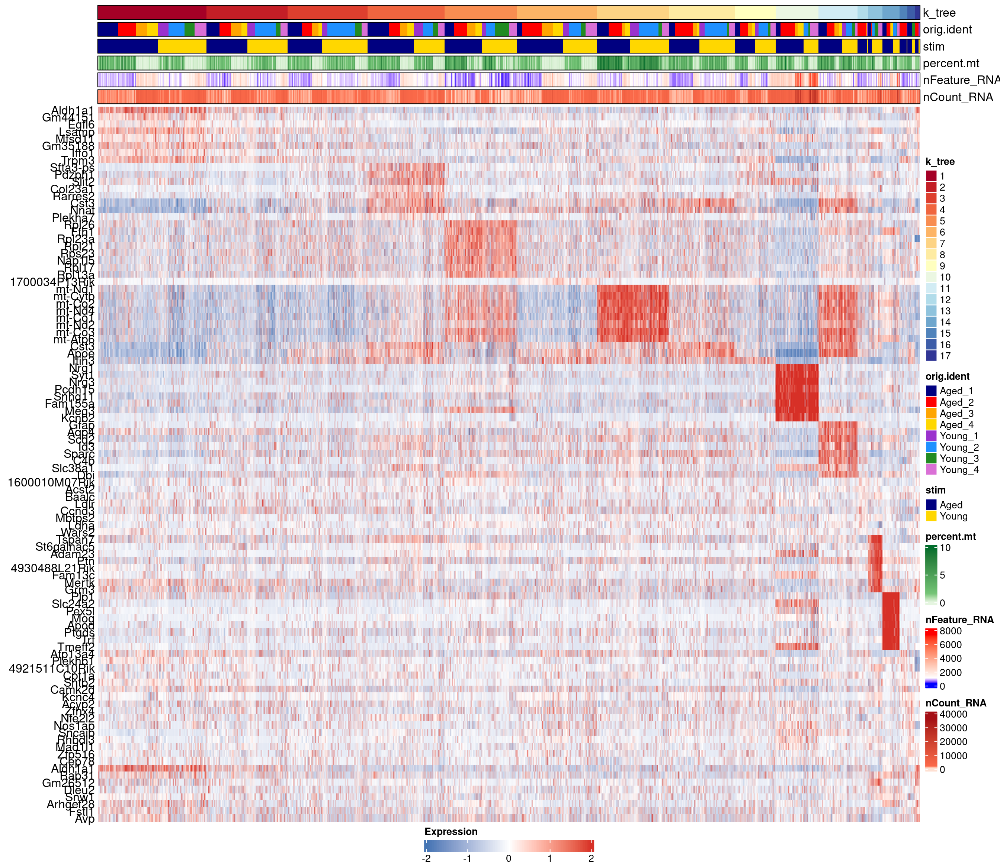
library(scCustomize)
gene_list_plot <-
Extract_Top_Markers(marker_dataframe = srt.markers.roc,
num_genes = 3,
rank_by = "avg_log2FC",
make_unique = TRUE,
named_vector = FALSE)
sample_colors <- c("darkorchid3", "gold")
# Create Plots
Stacked_VlnPlot(seurat_object = combined_sct, features = gene_list_plot, x_lab_rotate = TRUE,
colors_use = sample_colors, split.by = "stim")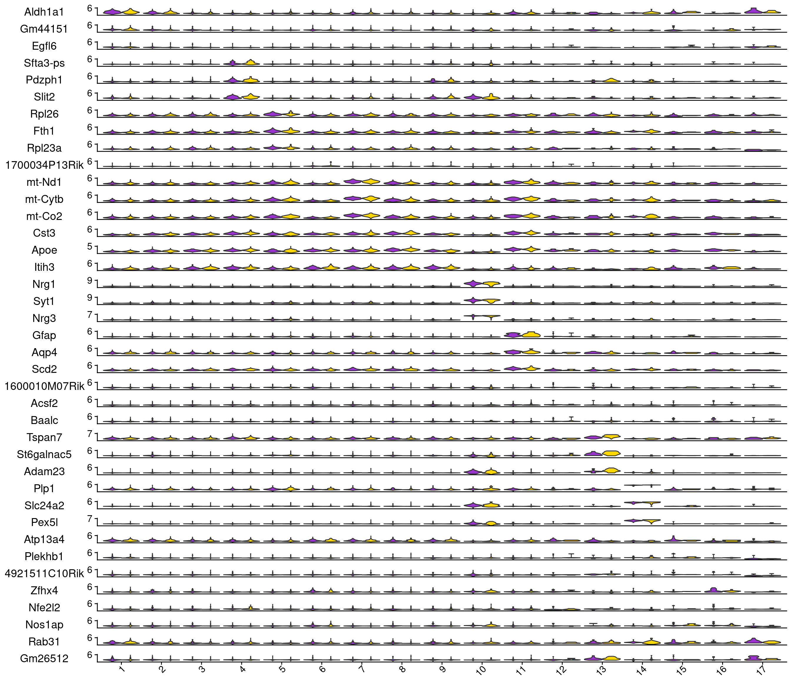
plEmbCombCMrk <- FeaturePlot(
combined_sct,
features = genes.embed[genes.embed %in%
rownames(combined_sct@assays$SCT@data)],
min.cutoff = "q15", max.cutoff = "q85",
ncol = 4, order = TRUE
)
plEmbCombCMrk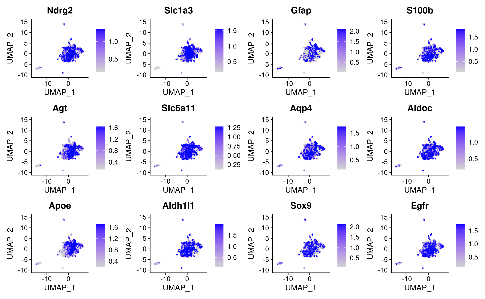
plEmbCombCMrk2 <- FeaturePlot(
combined_sct,
features = gene_list_plot,
min.cutoff = "q15", max.cutoff = "q85",
ncol = 4, order = TRUE
)
plEmbCombCMrk2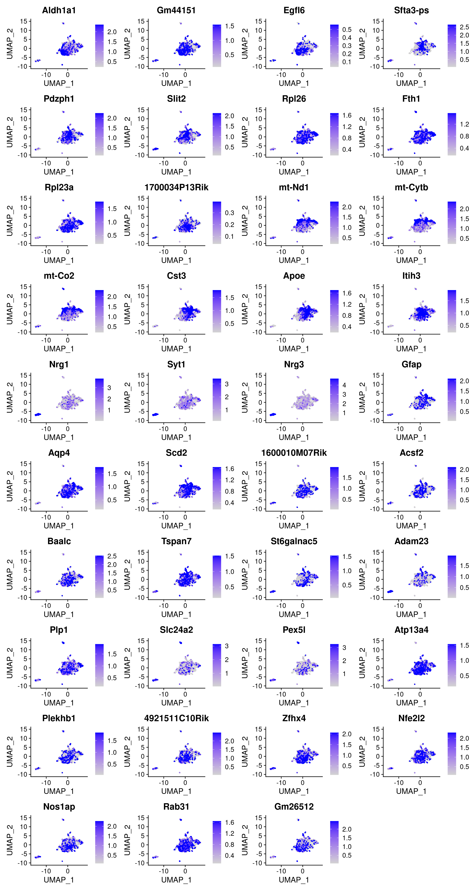
gene_list_plot2 <-
Extract_Top_Markers(marker_dataframe = srt.markers.lr,
num_genes = 3,
rank_by = "avg_log2FC",
make_unique = TRUE,
named_vector = FALSE)
plEmbCombCMrk3 <- FeaturePlot(
combined_sct,
features = gene_list_plot2,
min.cutoff = "q15", max.cutoff = "q85",
ncol = 4, order = TRUE
)
plEmbCombCMrk3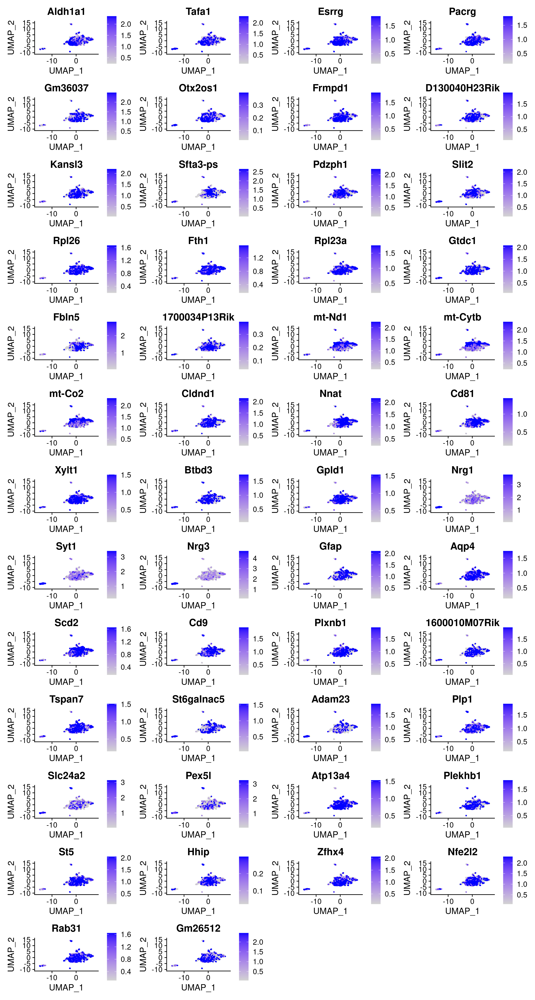
sessionInfo()R version 4.2.2 Patched (2022-11-10 r83330)
Platform: x86_64-pc-linux-gnu (64-bit)
Running under: Ubuntu 22.04.1 LTS
Matrix products: default
BLAS: /usr/lib/x86_64-linux-gnu/openblas-pthread/libblas.so.3
LAPACK: /usr/lib/x86_64-linux-gnu/openblas-pthread/libopenblasp-r0.3.20.so
locale:
[1] LC_CTYPE=en_US.UTF-8 LC_NUMERIC=C
[3] LC_TIME=en_US.UTF-8 LC_COLLATE=en_US.UTF-8
[5] LC_MONETARY=en_US.UTF-8 LC_MESSAGES=en_US.UTF-8
[7] LC_PAPER=en_US.UTF-8 LC_NAME=C
[9] LC_ADDRESS=C LC_TELEPHONE=C
[11] LC_MEASUREMENT=en_US.UTF-8 LC_IDENTIFICATION=C
attached base packages:
[1] stats4 stats graphics grDevices utils datasets methods
[8] base
other attached packages:
[1] scCustomize_1.0.2 Scillus_0.5.0
[3] schex_1.12.0 shiny_1.7.3
[5] SingleCellExperiment_1.20.0 SummarizedExperiment_1.28.0
[7] Biobase_2.58.0 GenomicRanges_1.50.1
[9] GenomeInfoDb_1.34.3 IRanges_2.32.0
[11] S4Vectors_0.36.0 BiocGenerics_0.44.0
[13] MatrixGenerics_1.10.0 matrixStats_0.63.0
[15] ggraph_2.1.0 mrtree_0.0.0.9000
[17] Nebulosa_1.8.0 swne_0.6.20
[19] patchwork_1.1.2 UpSetR_1.4.0
[21] glmGamPoi_1.10.0 sctransform_0.3.5
[23] SeuratDisk_0.0.0.9020 SeuratWrappers_0.3.1
[25] SeuratObject_4.1.3 Seurat_4.3.0
[27] reticulate_1.26 kableExtra_1.3.4
[29] future_1.29.0 skimr_2.1.4
[31] magrittr_2.0.3 forcats_0.5.2
[33] stringr_1.4.1 dplyr_1.0.10
[35] purrr_0.3.5 readr_2.1.3
[37] tidyr_1.2.1 tibble_3.1.8
[39] ggplot2_3.4.0 tidyverse_1.3.2
[41] here_1.0.1 workflowr_1.7.0
loaded via a namespace (and not attached):
[1] rsvd_1.0.5 ica_1.0-3 svglite_2.1.0
[4] ps_1.7.2 foreach_1.5.2 lmtest_0.9-40
[7] rprojroot_2.0.3 crayon_1.5.2 MASS_7.3-58.1
[10] nlme_3.1-160 backports_1.4.1 reprex_2.0.2
[13] rlang_1.0.6 XVector_0.38.0 ROCR_1.0-11
[16] readxl_1.4.1 irlba_2.3.5.1 callr_3.7.3
[19] data.tree_1.0.0 rjson_0.2.21 bit64_4.0.5
[22] glue_1.6.2 vipor_0.4.5 parallel_4.2.2
[25] processx_3.8.0 spatstat.sparse_3.0-0 spatstat.geom_3.0-3
[28] haven_2.5.1 tidyselect_1.2.0 liger_2.0.1
[31] fitdistrplus_1.1-8 zoo_1.8-11 ggpubr_0.5.0
[34] formattable_0.2.1 xtable_1.8-4 evaluate_0.18
[37] cli_3.4.1 zlibbioc_1.44.0 rstudioapi_0.14
[40] miniUI_0.1.1.1 sp_1.5-1 whisker_0.4
[43] bslib_0.4.1 fastmatch_1.1-3 treeio_1.23.0
[46] maps_3.4.1 xfun_0.35 clue_0.3-63
[49] askpass_1.1 usedist_0.4.0 cluster_2.1.4
[52] tidygraph_1.2.2 clusterGeneration_1.3.7 expm_0.999-6
[55] SymSim_0.0.0.9000 ggrepel_0.9.2 ape_5.6-2
[58] listenv_0.8.0 dendextend_1.16.0 png_0.1-7
[61] withr_2.5.0 bitops_1.0-7 ggforce_0.4.1
[64] plyr_1.8.8 cellranger_1.1.0 pracma_2.4.2
[67] coda_0.19-4 pillar_1.8.1 GlobalOptions_0.1.2
[70] cachem_1.0.6 fs_1.5.2 scatterplot3d_0.3-42
[73] hdf5r_1.3.7 GetoptLong_1.0.5 paletteer_1.5.0
[76] vctrs_0.5.1 ellipsis_0.3.2 generics_0.1.3
[79] tools_4.2.2 beeswarm_0.4.0 entropy_1.3.1
[82] munsell_0.5.0 tweenr_2.0.2 proxy_0.4-27
[85] DelayedArray_0.24.0 fastmap_1.1.0 compiler_4.2.2
[88] abind_1.4-5 httpuv_1.6.6 ggimage_0.3.1
[91] plotly_4.10.1 GenomeInfoDbData_1.2.9 gridExtra_2.3
[94] colorway_0.2.0 lattice_0.20-45 deldir_1.0-6
[97] snow_0.4-4 utf8_1.2.2 later_1.3.0
[100] jsonlite_1.8.3 concaveman_1.1.0 scales_1.2.1
[103] carData_3.0-5 tidytree_0.4.1 pbapply_1.6-0
[106] lazyeval_0.2.2 promises_1.2.0.1 car_3.1-1
[109] doParallel_1.0.17 R.utils_2.12.2 goftest_1.2-3
[112] spatstat.utils_3.0-1 checkmate_2.1.0 rmarkdown_2.18
[115] cowplot_1.1.1 webshot_0.5.4 Rtsne_0.16
[118] uwot_0.1.14 igraph_1.3.5 survival_3.4-0
[121] numDeriv_2016.8-1.1 yaml_2.3.6 plotrix_3.8-2
[124] systemfonts_1.0.4 htmltools_0.5.3 graphlayouts_0.8.3
[127] quadprog_1.5-8 viridisLite_0.4.1 digest_0.6.30
[130] assertthat_0.2.1 mime_0.12 repr_1.1.4
[133] yulab.utils_0.0.5 future.apply_1.10.0 ggmin_0.0.0.9000
[136] remotes_2.4.2 data.table_1.14.6 R.oo_1.25.0
[139] splines_4.2.2 labeling_0.4.2 rematch2_2.1.2
[142] Cairo_1.6-0 googledrive_2.0.0 RCurl_1.98-1.9
[145] broom_1.0.1 ks_1.13.5 hms_1.1.2
[148] modelr_0.1.10 colorspace_2.0-3 base64enc_0.1-3
[151] BiocManager_1.30.19 mnormt_2.1.1 ggbeeswarm_0.6.0
[154] shape_1.4.6 aplot_0.1.8 ggrastr_1.0.1
[157] sass_0.4.3 Rcpp_1.0.9 mclust_6.0.0
[160] RANN_2.6.1 circlize_0.4.15 mvtnorm_1.1-3
[163] NNLM_0.4.4 fansi_1.0.3 tzdb_0.3.0
[166] parallelly_1.32.1 R6_2.5.1 grid_4.2.2
[169] ggridges_0.5.4 lifecycle_1.0.3 phytools_1.2-0
[172] ggsignif_0.6.4 googlesheets4_1.0.1 leiden_0.4.3
[175] phangorn_2.10.0 jquerylib_0.1.4 snakecase_0.11.0
[178] Matrix_1.5-3 RcppAnnoy_0.0.20 RColorBrewer_1.1-3
[181] iterators_1.0.14 spatstat.explore_3.0-5 htmlwidgets_1.5.4
[184] umap_0.2.9.0 polyclip_1.10-4 timechange_0.1.1
[187] gridGraphics_0.5-1 optimParallel_1.0-2 ComplexHeatmap_2.14.0
[190] rvest_1.0.3 mgcv_1.8-41 globals_0.16.2
[193] openssl_2.0.4 spatstat.random_3.0-1 progressr_0.11.0
[196] codetools_0.2-18 lubridate_1.9.0 FNN_1.1.3.1
[199] getPass_0.2-2 dbplyr_2.2.1 RSpectra_0.16-1
[202] R.methodsS3_1.8.2 gtable_0.3.1 DBI_1.1.3
[205] git2r_0.30.1 highr_0.9 ggfun_0.0.9
[208] tensor_1.5 httr_1.4.4 KernSmooth_2.23-20
[211] vroom_1.6.0 stringi_1.7.8 reshape2_1.4.4
[214] farver_2.1.1 viridis_0.6.2 hexbin_1.28.2
[217] magick_2.7.3 ggtree_3.7.1.002 xml2_1.3.3
[220] combinat_0.0-8 ggplotify_0.1.0 scattermore_0.8
[223] bit_4.0.5 clustree_0.5.0 spatstat.data_3.0-0
[226] janitor_2.1.0 pkgconfig_2.0.3 gargle_1.2.1
[229] ggprism_1.0.4 rstatix_0.7.1 knitr_1.41